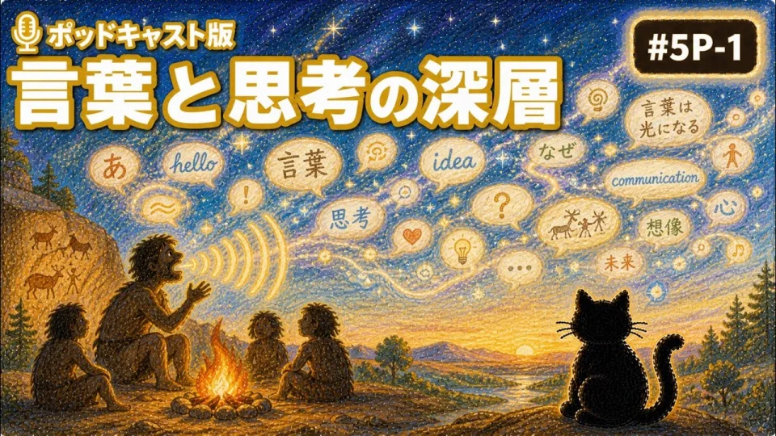
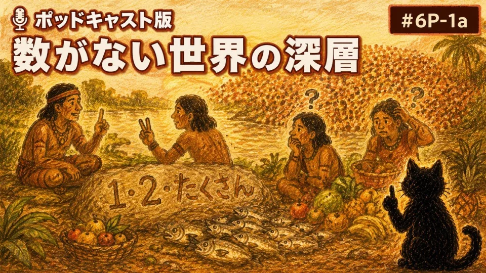
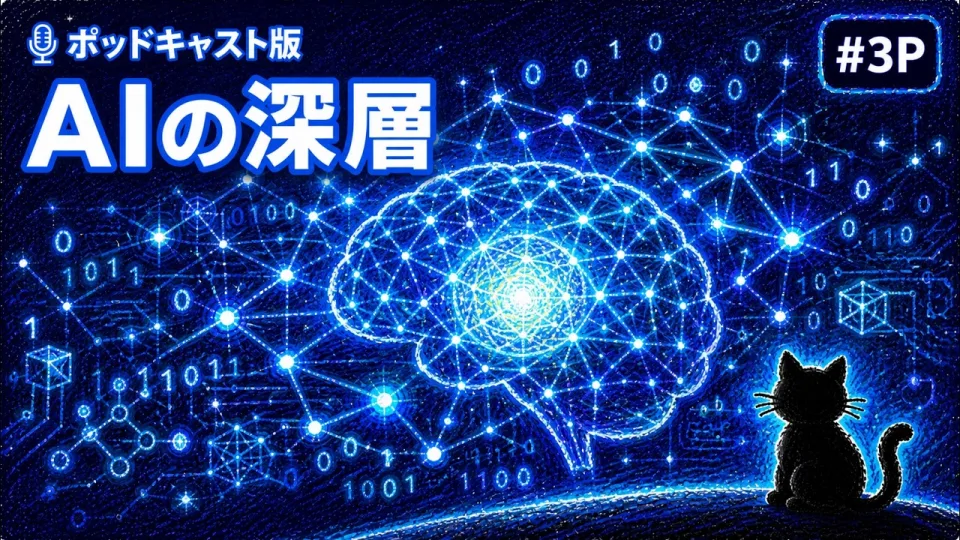

読む学び・思考
まず、この一本
「わかった」と思ったとき、考えるのをやめていないか
情報を得ることと、理解すること。その間には何があるのだろう。
note · 2026.07.24読む
READ · LISTEN
じっくり読みたい日も、耳で物語をたどりたい日も、まず全体を眺めたい日も。
いまの時間と気分に合う入口から始められます。
KNOW · TALK
noteとPodcastで共通言語をつくり、テーマ専用の対話へ進みます。
CURATED LIBRARY
検索ではなく、読む・聴くと、編集されたテーマから入口を選びます。
まず、この一本
情報を得ることと、理解すること。その間には何があるのだろう。
AIの答えを、思考の終点ではなく始点にするには。
言葉は世界を狭めるのか、それとも見えるようにするのか。
測れる結果と、学ぶことの価値は同じだろうか。

言葉がない世界では、思考はどのように存在するのか。

数字で測れるものだけが、価値あるものなのか。

AIが考えているように見えるとき、人間が考えるとは何か。
条件に合う入口は、まだ見つかりませんでした。